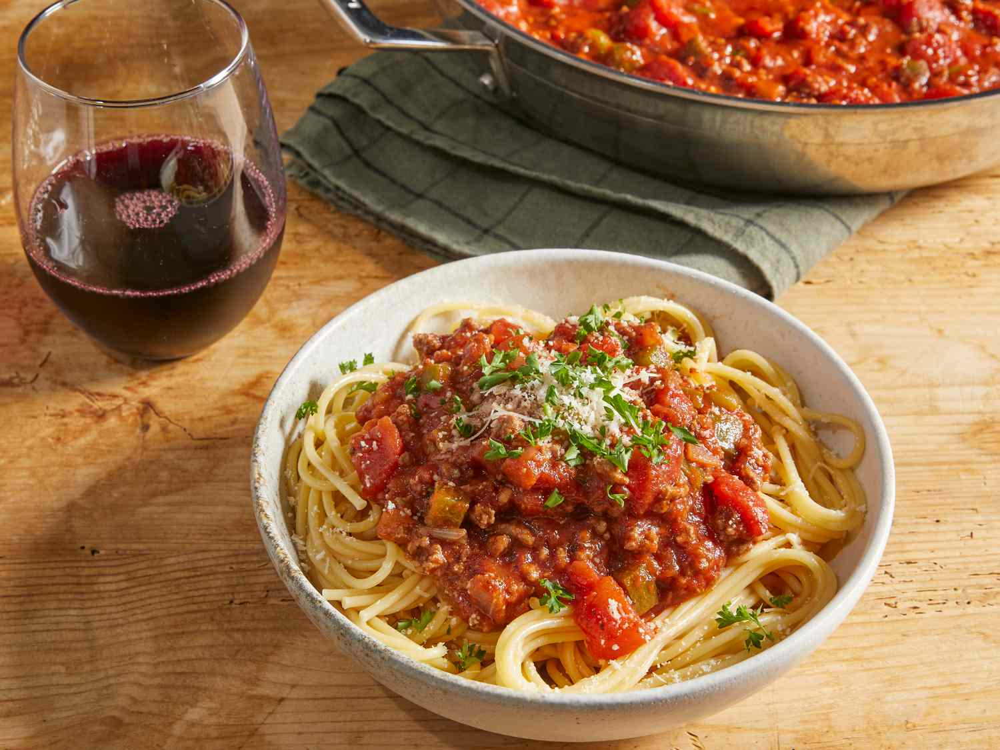

Spaghetti

Description
There's nothing like classic spaghetti and meat sauce to
bring people together around the dinner table. This homemade spaghetti sauce
with ground beef recipe will satisfy all your comfort food cravings.
Ingredients
- 1 pound ground beef
- 1 medium onion, chopped
- 4 cloves garlic, minced
- 1 small green bell pepper, diced
- 1 (28 ounce) can diced tomatoes
- 1 (16 ounce) can tomato sauce
- 1 (6 ounce) can tomato paste
- 2 teaspoons dried oregano
- 2 teaspoons dried basil
- 1 teaspoon salt
- ½ teaspoon ground black pepper
Steps
- Gather all ingredients.
- Combine ground beef, onion, garlic, and green pepper in a large
saucepan over medium-high heat. Cook and stir until meat is browned
and crumbly and vegetables are tender, 5 to 7 minutes. Drain grease.
- Stir diced tomatoes, tomato sauce, and tomato paste into the pan.
Season with oregano, basil, salt, and pepper. Simmer spaghetti sauce
for 1 hour, stirring occasionally.
- Bring a large pot of lightly salted water to a boil. Cook lasagna
noodles in boiling water for 8 to 10 minutes. Drain noodles, and
rinse with cold water.
- Serve hot and enjoy!